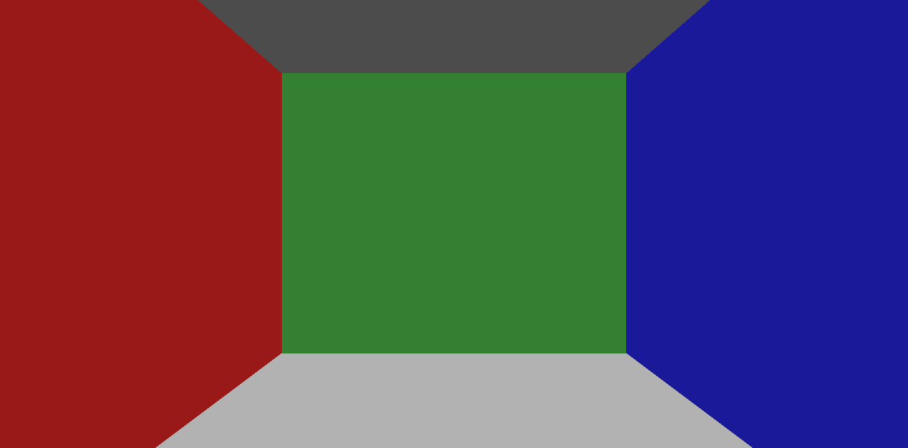
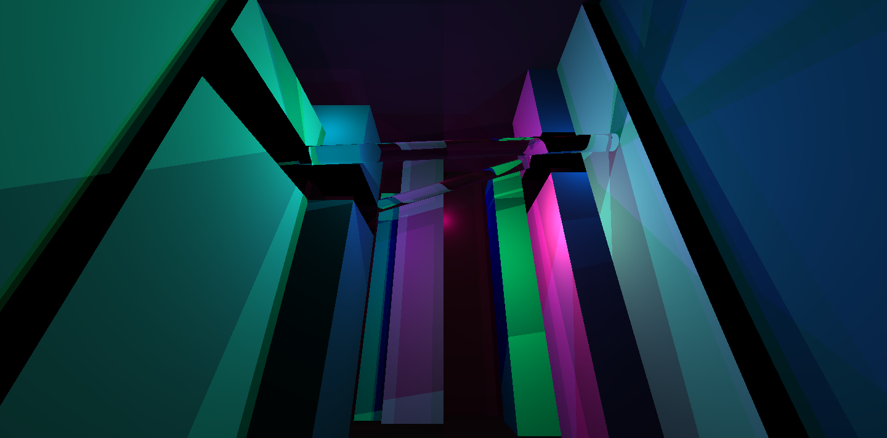
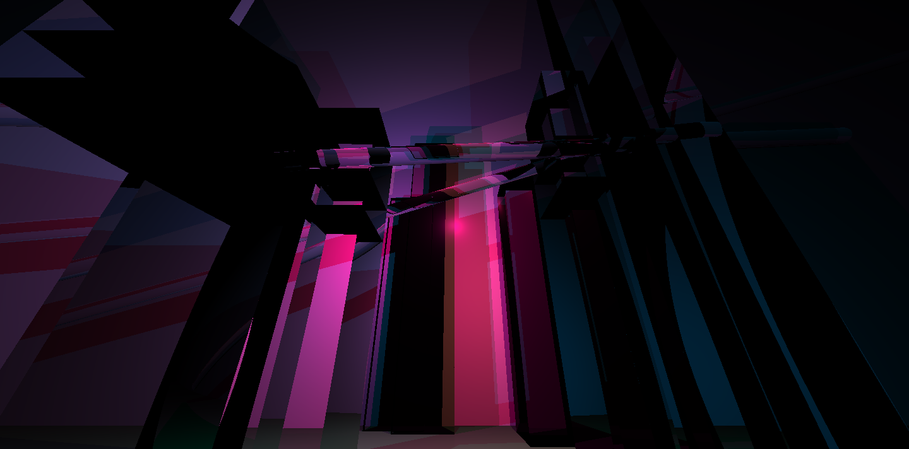

COS426 Assignment 3 Ray Tracer — Writeup
Switch to: Interactive Editor
That all images in this writeup were generated directly by my solution code or provided by the course staff (exception: art contest submissions may pass through intermediary software like GIMP)
That no other student has viewed my writeup explanations or my writeup images
That my solution code is my own work; particularly that my solution was not copied from any other student's solution code, and that no other student copied their solution directly code from me
That I did not discuss assignment specifics or view the solution code of any other student besides that of my (optional) partner
That I have followed all other course collaboration and course plagiarism policies as written on the course website.
Yunzi Shi (yunzis)
Collaborated with: N/A
I'd like to use 1 late day for this assignment.
- (1.0) Trace Ray and Calculate Color
- (2.0) Triangle
- (2.0) Sphere
- (2.5) Box
- (2.0) Cylinder
- (3.0) Cone
- (1.0) Shadows
- (3.0) Soft shadows
- (2.0) Transmission
- (1.0) Checkerboard
- (1.5) Phong material
- (1.5) Special material
- (1.0) Custom Scene
- (1.0) Art Contest
TraceRay
For the first part of the assignment, I followed the provided
instructions to complete the traceRay and calculateColor
functions.

Triangle
I followed the provided instructions on the lecture and precept slides to complete the
findIntersectionWithTriangle function. I first find the normal
of the plane where the triangle lies. I then calculate geometrically whether the intersection
point lies inside the triangle. Finally, return the distance from the light
to the intersection point, otherwise return INFINITY.
Sphere
I followed the provided instructions on the lecture and precept slides to complete the
findIntersectionWithSphere function. I first find the two intersection
points (if exist). I then determine which is the closest point of intersection out of the sphere.
Finally, return the distance from the light to the intersection point, otherwise return INFINITY.
Box
I followed the provided instructions on the lecture and precept slides to complete the
findIntersectionWithBox function. I iterate through all six faces of the
box, keeping track of the closest intersection point. If the ray intersects with
the face, I check whether the current intersection point is closer and update
accordingly.
Cylinder
I followed the provided instructions on the lecture and precept slides to complete the
getIntersectOpenCylinder and getIntersectDiscfunctions.
For intersection with open cylinder, I first find the two intersection points (if exist). I then select the closer of the two. Then I determine whether they are valid by checking if they fall within the height of the cylinder, and return the intersection if valid.
For intersection with disk, I first find the intersection point with the plane in which the disk lies. Then I determine if the intersection point falls within the plane by comparing the distance between the intersection point to the center with the radius of the disk.
Cone
I followed the provided instructions on the lecture and precept slides to complete the
getIntersectOpenCone function. For intersection with open cylinder,
I first find the two intersection points (if exist) and select the closer of the two.
Then I determine whether they are valid by checking if they fall within the height
of the cone, and return the intersection if valid.
Shadows
I followed the provided instructions on the lecture and precept slides to complete the
pointInShadow function. I check whether the ray from the intersection
point to the light is blocked by any object by comparing the distance with the length of
lightVec. If the distance travelled by the ray is shorter, return true for
the point is in shadow.
Soft shadows
I had some troubles implementing soft shadows and neither of my solutions seem entirely right, and I kept my code for both. In my first implementation, I was getting concentric circles instead of a gradient. In the second, I don't really understand why the sampling suddenly became discrete.
Transmission
I followed the provided instructions on the lecture and precept slides to complete the
calcReflectionVector function. This is implemented according to
Snell's Law.
Checkerboard
I followed the provided instructions on the lecture and precept slides to complete the
calculateSpecialDiffuseColor function. I first divide the 3d space
in the scene into cubes of black and white based on their spatial coordinates. Then I
return the color blended with the original color of the material.
Phong material
I followed the provided instructions on the lecture and precept slides to complete the
getLightContribution function. This is implemented according to
the specular reflection model.
Special material
I followed the provided instructions on the lecture and precept slides to complete the
calculateSpecialDiffuseColor function. I implemented the Perlin noise
adapted from /en.wikipedia.org/wiki/Perlin_noise. The adaptation was mainly implementing
a gradient function which calculates the "random" but determined gradient vector for
each control point.
Custom Scene
A cyberpunk cityscape with skyscrapers lit up by neon-colored lights. This is implemented with a series of boxes and lights of a particular color spectrum. The first scene uses matte boxes and the second scene uses glass boxes.
 Art Contest
I was interested in simulating a scene of a cyberpunk cityscape with dark skyscrapers, neon-colored lights, and glass rail transportation in between the buildings. I made two different versions and controlled the color atmosphere by 1)the color of the matt boxes and the lights 2) the glass boxes and the lights.
Here is my reference: